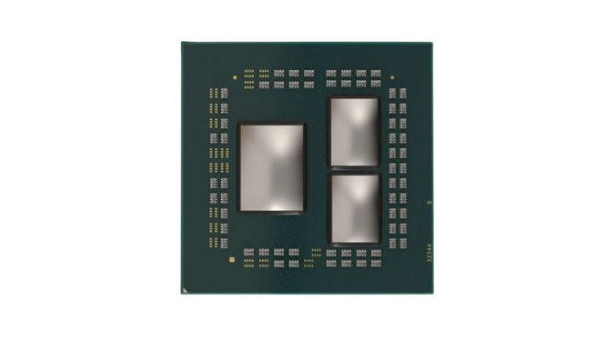
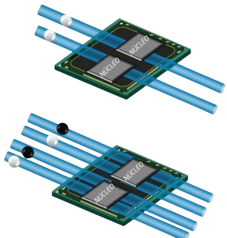

CPU
NUCLEOS
Es la unidad de procesamiento principal dentro de un CPU. Cada núcleo puede ejecutar de forma independiente las instrucciones de un programa, permitiendo realizar múltiples tareas simultáneamente. Los procesadores modernos incluyen varios núcleos para mejorar el rendimiento, la velocidad y la capacidad de multitarea del sistema.
HILOS
Es una unidad de ejecución lógica dentro de un núcleo del procesador. Cada hilo representa una secuencia de instrucciones que el CPU puede procesar de manera independiente. Gracias a tecnologías como Hyper-Threading o SMT, un núcleo puede manejar varios hilos al mismo tiempo, mejorando la eficiencia y el rendimiento en tareas multitarea.
SOCKET
Es el conector físico del procesador que se encuentra en la placa base. Su función es proporcionar la interfaz eléctrica y mecánica que permite instalar y comunicar el CPU con el resto de los componentes del sistema. Cada tipo de procesador utiliza un socket específico, por lo que la compatibilidad entre la placa madre y el CPU depende de que ambos compartan el mismo tipo de socket.
FRECUENCIA
Es la velocidad a la que un procesador ejecuta instrucciones, medida en hercios (Hz). Indica cuántos ciclos por segundo realiza cada núcleo del CPU. A mayor frecuencia —expresada en gigahercios (GHz)—, mayor es la cantidad de operaciones que puede realizar en menos tiempo, lo que se traduce en un mejor rendimiento en tareas que dependen de la velocidad por núcleo.
TDP
Es la cantidad máxima de calor, expresada en vatios (W), que un procesador genera bajo carga máxima y que el sistema de refrigeración debe disipar de forma segura. Aunque también se relaciona con el consumo energético del CPU, su principal propósito es indicar las necesidades térmicas del procesador para garantizar un funcionamiento estable y eficiente.